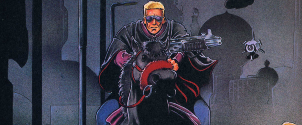

In the future of Dredd's world, East-Meg Two is culturally like an episode of Happy Days. Judge Razors (a violent sociopath) and his colleague, Judge Ed (a talking horse), ride around gunning people down.
Art by Nigel Dobbyn
| Story Title | Parts | Pages | w indicates a wraparound coverCovers | Year(s) | Issues | Writer | Artist | Colourist | Letterer |
|---|---|---|---|---|---|---|---|---|---|
| Red Razors | 8 | 72 | M1.08: Steve Yeowell 1 | 1991 | M1.08-M1.15 | Mark Millar | Steve Yeowell | Phillip Lynch | Gordon Robson |
| The Secret Origin of Comrade Ed | 1 | 9 | 0 | 1992 | JDMS5 | Mark Millar | Steve Yeowell | Gina Hart | Annie Parkhouse |
| Doctor's Orders | 1 | + 1 credit pages7 | 0 | 1992 | JDYB'93 | Mark Millar | Steve Yeowell | [b&w] | Annie Parkhouse |
Linked to Judge DreddThe Hunt for Red Razors | 10 | 60 | 908: Dermot Power 917: Mick Austin 2 | 1994 | 908-917 | Mark Millar | Nigel Dobbyn | <-- | Annie Parkhouse |
| Rites of Passage | 1 | 6 | 0 | 1995 | 971 | Mark Millar | Nigel Dobbyn | Dondie Cox | Ellie de Ville |
| year | episodes | pages |
| 1983 | 0 | 0 |
| 1984 | 0 | 0 |
| 1985 | 0 | 0 |
| 1986 | 0 | 0 |
| 1987 | 0 | 0 |
| 1988 | 0 | 0 |
| 1989 | 0 | 0 |
| 1990 | 0 | 0 |
| 1991 | 8 | 72 |
| 1992 | 2 | 16 |
| 1993 | 0 | 0 |
| 1994 | 10 | 60 |
| 1995 | 1 | 6 |
| 1996 | 0 | 0 |
| 1997 | 0 | 0 |
| 1998 | 0 | 0 |
| 1999 | 0 | 0 |
| 2000 | 0 | 0 |
| 2001 | 0 | 0 |
| 2002 | 0 | 0 |
| 2003 | 0 | 0 |